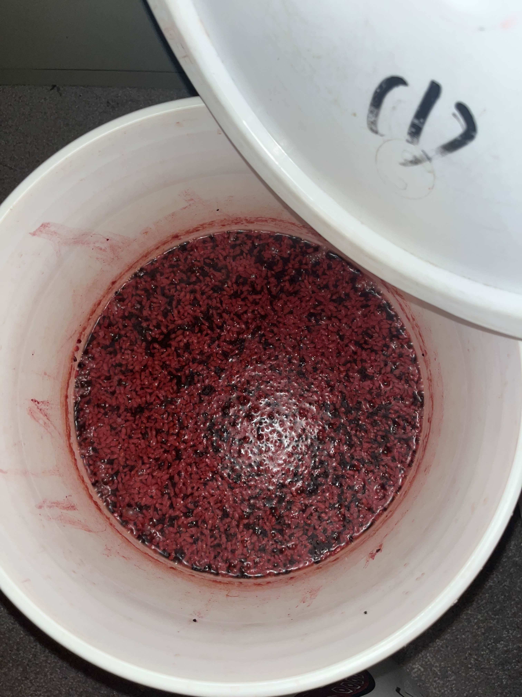

Red Wine and Reflection: Tradition Meets Modern Beliefs
Personal Experiences
My personal experience with religion hasn’t been particularly great, as my family isn’t very religious except for my mom and brother. At a young age, I had unrestricted internet access and spent a lot of time watching historical videos about religion. I found contradictions in what I learned: most religions preach about peace, yet wars played a significant role in their expansion. As I’ve grown older, I’ve come to realize that it’s not religion itself that is at fault, but rather how people interpret and act upon it. At its core, the true meaning of many religions is beautiful, offering a path to happiness and fulfillment.
Instead of adopting a specific religion, I’ve leaned more toward spirituality. I dislike the idea of being controlled or told to live a certain way by a group of people. Everyone’s life is unique, and one path may work for one person but not for another. I appreciate the concept of open beliefs, where you are free to explore and connect with your inner self rather than being bound to worship a specific being. I’ve found peace through meditation and mantras, and I like to study various religions, picking elements that resonate with me. Each religion has something valuable to offer, and I take inspiration from those teachings that align with my current views and beliefs. One of the most important mindsets I’ve learned is to remain open-minded—never dismiss good information. Instead, adopt it if it feels right, rather than rejecting it outright.

Family Experiences
I’ve never really asked my parents why they believe in religion, but I do recall something my brother shared with me. Once, while playing basketball with his friends at night—not too late, as the area was well-lit and active—they were harassed by a group of people. I believe the incident was racially motivated. The situation escalated into an argument and eventually a full-on brawl involving more than 10 people. My brother was beaten so badly that he had to be hospitalized.
My grandmother, who lives in China, prayed to the Goddess Kwan Yin every day for my brother’s recovery. Within a few days, his swelling subsided, and he stabilized. Ever since that incident, my brother has taken religion much more seriously. He prays daily, burns incense regularly, and offers fruits as a form of devotion every week.

Red Wine Making
One tradition I’d like to share is the art of making Chinese red wine, which has been passed down for generations. I come from Fuzhou, a province in Fujian, China. Many elders in the villages would drink as a pastime, but beer was expensive, so they began making their own alcohol.
The process of making Chinese red wine is fairly simple and can also be incorporated into various Chinese dishes. The primary ingredients are rice, red yeast (which gives the wine its red color), and a large container. While I won’t detail the exact method of preparing the rice, the process relies heavily on fermentation and takes time to complete. Here are some images illustrating the tradition:
Preparing the key ingredients: rice and red yeast for fermentation.
Blending the red yeast with rice, an essential step in the fermentation process.
The fermentation process begins in a large container, where the ingredients slowly transform into wine.
The final product: rich, homemade Chinese red wine, ready to be enjoyed.